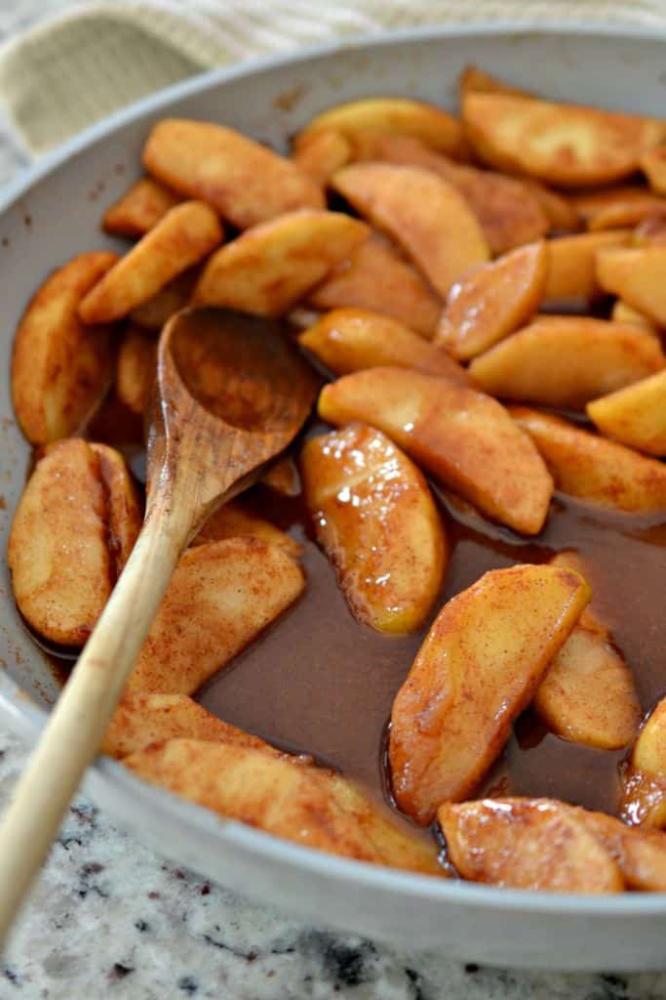

Southern Fried Apples

Have you ever wanted to try food from the South?
Well this is the perfect dish to have a taste of the South without visiting.
If you enjoyed this recipe I highly encourage you to visit the South!
Ingredients
- ½ cup butter
- ½ cup white sugar
- 2 tablespoons ground cinnamon
- 4 Granny Smith apples - peeled, cored, and sliced
Cooking Instructions
- Melt butter in a large skillet over medium heat. Add sugar and cinnamon; stir until sugar dissolves.
- Add apples and cook until softened, 5 to 8 minutes.